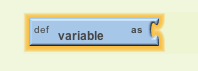
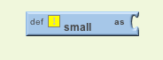
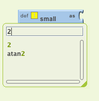
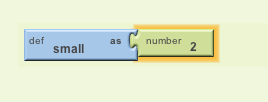

PaintPot (Part 2)
This project extends Part 1 of the tutorial to create both large and small dots, as a demonstration of how to use global variables .
Starting
Make sure you've completed the Set Up process and you have your completed project from PaintPot Part 1 loaded.
Start where you left off at the end of Part 1, with the project open in App Inventor. Use the Save As button to make a copy of PaintPot so you can work on the new version without affecting the original version. Name the copy PaintPotV2 (with no spaces). After saving a copy, you should see PaintPotV2 in the Designer .
Creating variables
The size of the dots drawn on the canvas is determined in the when DrawingCanvas.Touched event handler where call Drawing.DrawCircle is called with r , the radius of the circle, equal to 5. To change the thickness, all we need to do is use different values for r . Use r = 2 for small dots and r = 8 for large dots.
Start by creating names for these values:
- Open the Blocks Editor if it isn't already open and connect the phone. Your phone should show the buttons and the canvas you built previously.
- In the Blocks Editor, in the Built-In column, open the Definitions drawer. Drag out a def variable block. Change the text that reads variable to read small . A yellow warning exclamation mark will appear on the block. If you mouse over this you'll see a warning message explaining that the block has an empty socket.
- You need to fill in the socket with a number block that specifies the value for small -- use 2 as the value. To create the number block, type the number 2. A menu will appear, showing you all the possible blocks that include "2" in their name. Click on the first one, which is the number 2 itself, and a number block with the value 2 should appear. Plug that in to the def variable block. The yellow warning mark will disappear, because the empty socket has been filled. (The second value listed in the menu is the math block atan2 , which you won't use here.)
Here are the steps in the sequence:
|  |  | |
|  |

|
 |
You've now defined a global variable named small whose value is the number 2.
Similar to small , define a global variable big , whose value is 8.
Finally, define a global variable dotsize and give it an initial value of 2.
You might wonder whether it would be better programming style to make the initial value of dotsize be the value of small rather than 2. That would be true, except for a subtle programming point: Doing that would be relying on the assumption that small will already have a value at the point where dotsize is assigned its value. In App Inventor, you can't make assumptions about the order in which different def blocks will be processed. In general, of course, you really would like to specify the order in which variables are assigned. You can do this by assigning all values when the application is initialized, using the Screen initialize event. The Quiz Me tutorial gives an example of initialization.
Using variables
Now change the call to DrawCircle in the touch event handler so that it uses the value of dotsize rather than always using 5.
In the Blocks Editor, switch to the My Blocks column, and open the My Definitions drawer. You should see six new blocks, two for each of the three variables defined:- a global ... block that produces the value of the variable
- a set global ... block that sets the variable to a new value.
These blocks were automatically created, similarly to the way that the blocks for x and y were created when you defined the when DrawingCanvas.Touched event handler in the part 1 of this tutorial. "Global" means "global variable", in contrast to the event-handler arguments, whose blocks are labeled "value". The difference is that the argument values are accessible only within the body of the event handler, while global variables are accessible throughout the entire program.
- Go to the when MyCanvas.Touched event handler and replace the number 5 block in call DrawCircle with the global dotsize block from the MyDefinitions drawer.
Changing the values of variables
Now set up a way to change dotsize to be small (2) or big (8). Do this with buttons.
- In the Designer, drag a HorizontalArrangement component into the Viewer pane below the DrawingCanvas component. Name the component BottomButtons
- Drag the existing Wipe button into BottomButtons .
- Drag two more button components from the Palette into BottomButtons , placing them next to the Wipe button.
- Name the buttons ButtonBig and ButtonSmall , and set their Text to read "Big dots" and "Small dots", respectively.
- In the Blocks Editor under My Blocks , create a when ... Clicked event handler for ButtonSmall that changes dotsize to be the value of small. To change dotsize use the set global dotsize to block from the MyDefinitions drawer and plug in the global small block.
- Make a similar event handler for ButtonBig .

You're done! You can draw in PaintPot and use the new buttons to draw either big dots or small dots. Notice that dragging your finger still produces a thin line. That's because the changes we just made don't affect how DrawLine is called.
Here's the finished program in the Designer

A bug for you to work on: The program you just built has a slight bug. If you start drawing before pressing any of the paint buttons, the paint color will be black; but after you choose a color, there's no way to get back to black. Think about how you could fix that.
Review
You create global variables by using def blocks from the Definitions drawer.
For each global variable you define, App Inventor automatically supplies a global block that gives the value of the variable, and a set global ... to block for changing the value of the variable. These blocks can be found in the My Definitions drawer.